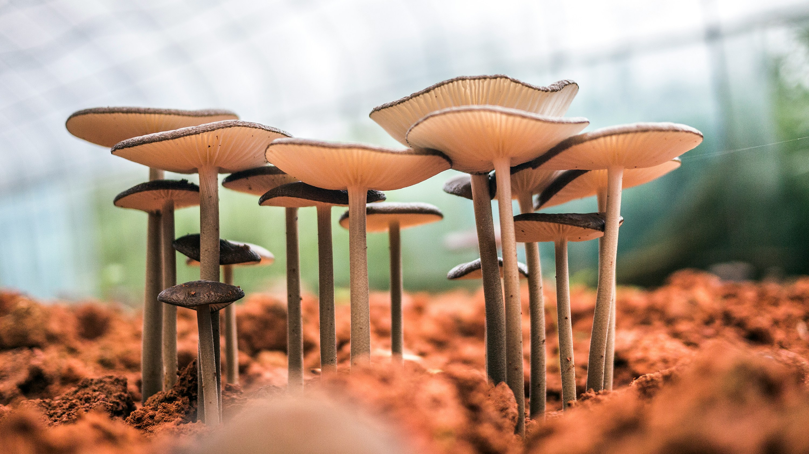
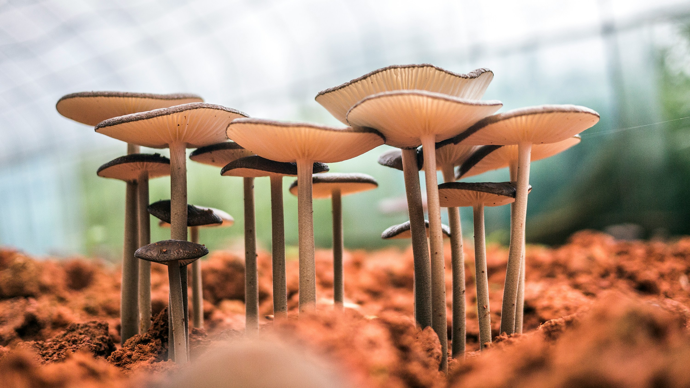
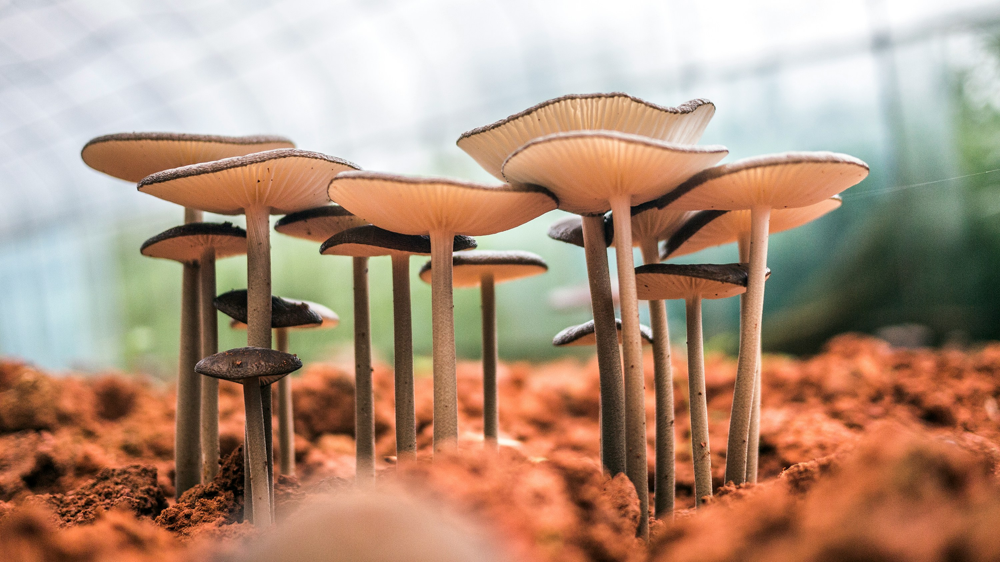

Nossa Galeria
Explore a beleza dos biomas do nosso planeta através das lentes da nossa equipe.


 



Uma coleção de imagens inspiradoras do mundo natural.
Explore a beleza dos biomas do nosso planeta através das lentes da nossa equipe.
